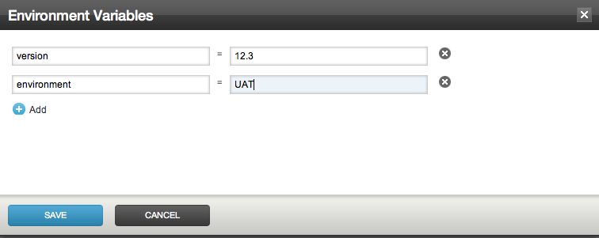
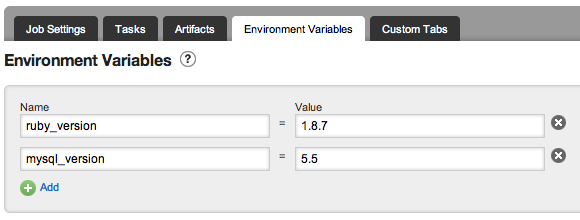

Using Environment Variables in Go
Standard Go environment variables
| Environment Variable | Description | Example contents |
|---|---|---|
| GO_SERVER_URL | Base URL for the Go server (including the context root) |
https://127.0.0.1:8154/go |
| GO_ENVIRONMENT_NAME | The name of the current environment. This is only set if the environment is specified. Otherwise the variable is not set. |
Development |
| GO_PIPELINE_NAME | Name of the current pipeline being run |
main |
| GO_PIPELINE_COUNTER | How many times the current pipeline has been run. |
2345 |
| GO_PIPELINE_LABEL | Label for the current pipeline. By default, this is set to the pipeline count (this can be set to a custom pipeline label) |
1.1.2345 |
| GO_STAGE_NAME | Name of the current stage being run |
dev |
| GO_STAGE_COUNTER | How many times the current stage has been run |
1 |
| GO_JOB_NAME | Name of the current job being run |
linux-firefox |
| GO_TRIGGER_USER | Username of the user that triggered the build. This will have one of three possible values
|
changes |
| GO_DEPENDENCY_LABEL_${pipeline name} | The label of the upstream pipeline (when using dependent pipelines) |
1.0.3456 |
| GO_DEPENDENCY_LOCATOR_${pipeline name} | The locator of the upstream pipeline (when using dependent pipelines), which can be used to create the URL for RESTful API calls |
upstream/1.0.3456/dev/1 |
| GO_REVISION | The current source control revision being run (when using only one material) |
123 |
| GO_REVISION_ ${material name or dest} | If you are using more than one material in your pipeline, the revision for each material is available. The environment variable is named with the material's "materialName" attribute. If "materialName" is not defined, then "dest" directory is used. Non alphanumeric characters are replaced with underscores ("_"). |
123 |
| GO_TO_REVISION | If the pipeline was triggered with a series of source control revisions(say 121 to 123), then this environment variable has the value of the latest revision (when using only one material). This is always same as GO_REVISION. |
123 |
| GO_TO_REVISION_ ${material name or dest} | If you are using more than one material in your pipeline, the 'to' revision for each material is available. The environment variable is named with the material's "materialName" attribute. If "materialName" is not defined, then "dest" directory is used. Non alphanumeric characters are replaced with underscores ("_"). |
123 |
| GO_FROM_REVISION | If the pipeline was triggered with a series of source control revisions(say 121 to 123), then this environment variable has the value of the oldest revision (when using only one material) |
121 |
| GO_FROM_REVISION_ ${material name or dest} | If you are using more than one material in your pipeline, the 'from' revision for each material is available. The environment variable is named with the material's "materialName" attribute. If "materialName" is not defined, then "dest" directory is used. Non alphanumeric characters are replaced with underscores ("_"). |
121 |
Use current revision in a build
It is often useful to use the current version control revision number in your build. For example, you might want to use the svn version number in the name of your binary for tracing purposes. Go makes much of this information available to your build scripts as environment variables.
Example usages
One material
For this example, we are going to assume we are using a single Subversion repository for our source control system and we have a job set up to call the ant target "dist".
- Add the following target to your ant build.xml
build.xml
<project name="test-build">
<property environment="env" />
<target name="dist">
<echo message="Building pipeline ${env.GO_PIPELINE_NAME}"
file="deploy-${env.GO_REVISION}.txt" />
</target>
</project>
deploy-123.txt Building pipeline my-app
Multiple materials
For this example we are going to assume we are using a Subversion repository containing the code and a Mercurial repository containing configuration scripts.
- Ensure the pipeline materials look like this
<pipeline name="multiple-materials">
<materials>
<svn url="..." dest="code" />
<hg url="..." dest="configuration/latest" />
</materials>
...
</pipeline>
build.xml
<project name="my-app">
<property environment="env" />
<target name="dist">
<echo message="Building pipeline ${env.GO_PIPELINE_NAME}"
file="deploy-${env.GO_REVISION_CODE}.txt" />
<echo message="Configuration version: ${env.GO_REVISION_CONFIGURATION_LATEST}"
file="deploy-${env.GO_REVISION_CODE}.txt"
append="true" />
</target>
</project>
deploy-123.txt Building pipeline my-app Configuration version: 59cab75ccf231b9e338c96cff0f4adad5cb7d335
Pass environment variables to a job
You can specify variables for Environments, Pipelines, Stages and Jobs. If a variable is specified more than once, the most specific scope is used. For example if you specify variable FOO='foo' for an environment, and FOO='bar' for a Job, then the variable will have the value 'bar' when the job runs.
Setting variables on an environment
You can add variables to an environment by editing the configuration of the environment. Click on the name of the environment to edit configuration.
You specify variables on an environment in the Config XML by adding an <environmentvariables> section to the environment definition.
<environment name="UAT">
<environmentvariables>
<variable name="FOO">
<value>bar</value>
</variable>
<variable name="MULTIPLE_LINES">
<value>Variable values can have
multiple lines (assuming that your operating system supports this correctly).
</value>
</variable>
<variable name="COMPLEX">
<value><![CDATA[<complex
values>]]>
</value>
</variable>
</environmentvariables>
<agents />
<pipelines />
</environment>
You can add variables for a job by editing the job configuration.
You specify variables on an job in the Config XML by adding an <environmentvariables> section to the job definition.
<job name="my-job">
<environmentvariables>
<variable name="FOO">
<value>bar</value>
</variable>
<variable name="MULTIPLE_LINES">
<value>Variable values can have
multiple lines (assuming that your operating system supports this correctly).
</value>
</variable>
<variable name="COMPLEX">
<value><![CDATA[<complex
values>]]>
</value>
</variable>
</environmentvariables>
...
</job>
Using environment variables in task
You can access these environment variables to construct versioned artifacts or to store properties on the current build. For example the following snippet of an ant file shows how to access Go variables:
<property environment="go" />
<target name="all">
<echo message="Building all!" />
<echo message="GO_SERVER_URL: ${go.GO_SERVER_URL}" />
<echo message="GO_PIPELINE_NAME: ${go.GO_PIPELINE_NAME}" />
<echo message="GO_PIPELINE_COUNTER: ${go.GO_PIPELINE_COUNTER}" />
<echo message="GO_PIPELINE_LABEL: ${go.GO_PIPELINE_LABEL}" />
<echo message="GO_STAGE_NAME: ${go.GO_STAGE_NAME}" />
<echo message="GO_STAGE_COUNTER: ${go.GO_STAGE_COUNTER}" />
<echo message="GO_JOB_NAME: ${go.GO_JOB_NAME}" />
<echo message="GO_REVISION: ${go.GO_REVISION}" />
</target>
CRUISE_XXX variables are deprecated since Go 2.0. Please use GO_XXX instead of CRUISE_XXX (For example: GO_SERVER_URL instead of CRUISE_SERVER_URL).